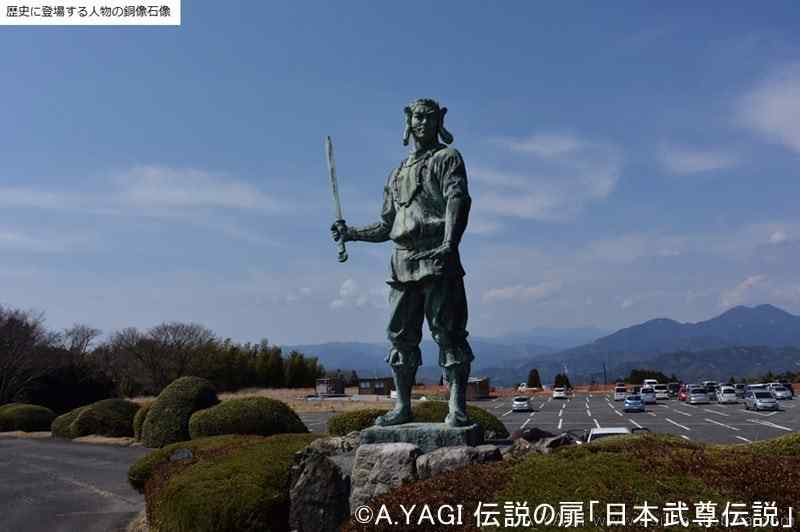

『古事記』には、倭健命(やまとたけるのみこと)は東国平定の長い戦からの帰途、 桑名郡尾津の浜から熊褒野（のぼの）へ向かう途中、しだいに弱ってきた命は｢わが足三重のまかりなして、 いと疲れたり｣と語ったことがきっかけ...とあるそうです。足が '三重に折れ曲がる' ニュアンスなのですね。
～ Mieについて ～
名称の由来
倭健命
(やまとたけるのみこと)

三重県の地勢・シンボル等
県の鳥 シロチドリ
面積 約5,800km2（全国第25位）
森林面積比率 65%程度（H19年度末）
人口 170万人程度（全国第22位）
県の花 ハナショウブ（花言葉：優しい心 など）
県のさかな 伊勢えび
三重は何地方？
国土形成計画法では
「中部圏」
法令面では、
・近畿圏整備法における「近畿圏」
・中部圏開発整備法における「中部圏」
のいずれにも三重県は指定されています。地方の区分では、法律等で一律に定められている訳ではなく、
歴史的背景や地理的条件、経済的・社会的関係などを考慮し、適宜分類されているようです。
出身有名人（一部、五十音順）
| 浅尾美和 | スポーツ選手 | ビーチバレー |
| 浅野拓磨 | スポーツ選手 | サッカー |
| あべ静江 | 歌手 | 磯野貴理子 | 俳優 |
| 江戸川乱歩 | 小説家・推理作家 | |
| 小倉久寛 | 俳優・声優等 | |
| 小津 安二郎 | 映画監督・脚本家 | |
| 幸阪茉里乃 | アイドル | 櫻坂46 |
| 椎名 桔平 | 俳優 | |
| 瀬古 利彦 | スポーツ選手 | マラソン |
| 土性 沙羅 | スポーツ選手 | レスリング |
| 鳥羽 一郎 | 演歌歌手 | 山川豊の実兄 |
| 西野カナ | 歌手・作詞家 | |
| 平井堅 | 歌手・作詞家 | |
| 山川 豊 | 演歌歌手 | 兄弟船 |
| 吉田沙保里 | スポーツ選手 | レスリング |
| 渡瀬 マキ | 歌手・タレント | LINDBERG |